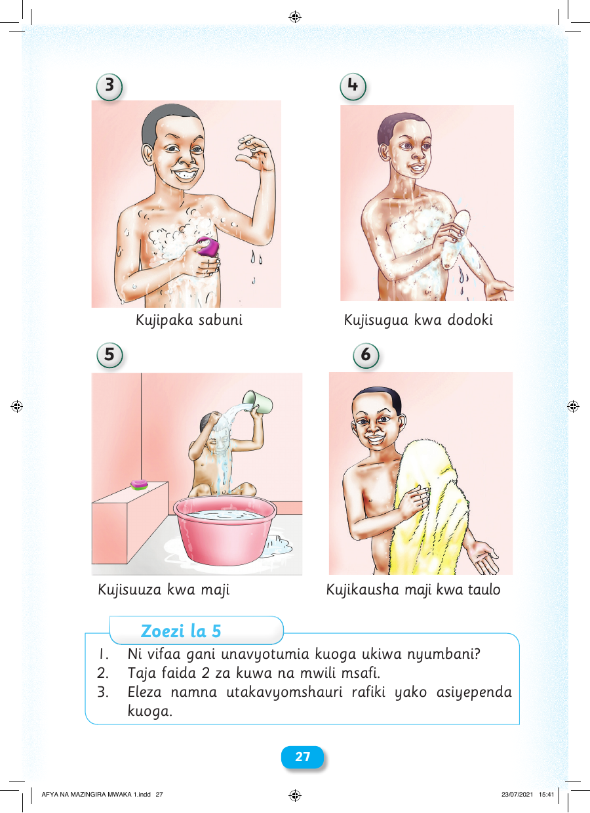

3 4 Kujipaka sabuni Kujisugua kwa dodoki 5 6 Kujisuuza kwa maji Kujikausha maji kwa taulo Zoezi la 5 1. Ni vifaa gani unavyotumia kuoga ukiwa nyumbani? 2. Taja faida 2 za kuwa na mwili msafi. 3. Eleza namna utakavyomshauri rafiki yako asiyependa kuoga. 2277 AFYA NA MAZINGIRA MWAKA 1.indd 27 23/07/2021 15:41